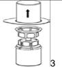
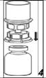

RÉSUMÉ DES CARACTÉRISTIQUES DU PRODUIT
ANSM - Mis à jour le : 02/08/2013
1. DENOMINATION DU MEDICAMENT
BERINERT 500 U, poudre et solvant pour solution injectable/perfusion
2. COMPOSITION QUALITATIVE ET QUANTITATIVE
Substance active: Inhibiteur de la C1 estérase, humaine
Berinert contient 500 unités internationales d'inhibiteur de la C1 estérase par flacon à injecter. L’activité en Inhibiteur de C1 estérase est exprimée en Unité Internationale (UI), conformément au standard de l’OMS.
Le produit contient 50 UI/ml d'inhibiteur de la C1 estérase après reconstitution avec 10 ml d'eau pour préparations injectables.
La teneur en protéines totales de la solution reconstituée est de 6,5 mg/ml.
Excipient ayant un effet notoire connu:
Sodium jusqu'à 486 mg (approximativement 21 mmol) pour 100 ml de solution.
Pour la liste complète des excipients, voir rubrique 6.1.
3. FORME PHARMACEUTIQUE
Poudre (lyophilisat blanc) et solvant pour solution injectable / perfusion.
4. DONNEES CLINIQUES
4.1. Indications thérapeutiques
Angiœdème héréditaire de type I et II (AEH).
Traitement et prévention avant une intervention des poussées aiguës.
4.2. Posologie et mode d'administration
Le traitement doit être initié sous la surveillance d'un médecin expérimenté dans le traitement du déficit de l’inhibiteur de la C1 estérase.
Posologie
Adultes
Traitement des crises d’angioedème aiguës :
20 UI par kilogramme de poids corporel (20 UI/kg p.c).
Prévention des crises d’angioedème avant une intervention :
1000 UI moins de 6 heures avant une intervention médicale, dentaire ou chirurgicale
Population pédiatrique
Traitement des crises d’angioedème aiguës :
20 UI par kilogramme de poids corporel (20 UI/kg p.c).
Prévention des crises d’angioedème avant une intervention :
15 à 30 UI par kilogramme de poids corporel (15 à 30 UI/kg p.c) moins de 6 heures avant une intervention médicale, dentaire ou chirurgicale. La dose doit être choisie en tenant compte du contexte clinique (par exemple du type d’intervention et de la sévérité de la maladie).
Mode d'administration
Berinert doit être reconstitué selon la rubrique 6.6. La solution reconstituée doit être administrée par voie intraveineuse ou en perfusion lente (4 ml/minute).
4.3. Contre-indications
Allergie connue à l'un des composants du médicament.
4.4. Mises en garde spéciales et précautions d'emploi
Pour les patients présentant des antécédents allergiques connus, des antihistaminiques et des corticostéroïdes doivent être administrés en prophylaxie.
En cas de survenue d'une réaction allergique ou de type anaphylactique, il convient d'arrêter immédiatement l'administration de BERINERT (par exemple l'injection ou la perfusion) et d'instaurer un traitement approprié. Les mesures thérapeutiques dépendent du genre et de la sévérité des effets indésirables. Les traitements standards du choc doivent être appliqués.
Les patients présentant un œdème laryngé nécessitent une surveillance particulièrement intensive dans un service disposant de traitements d'urgence.
L'utilisation hors indication ou le traitement du syndrome de fuite capillaire n'est pas conseillé avec Berinert (voir également la rubrique 4.8 « Effets indésirables »).
BERINERT contient jusqu'à 486 mg de sodium (approximativement 21 mmol) pour 100 ml de solution. Ceci doit être pris en compte pour les patients qui suivent un régime hyposodique.
Traitement à domicile et auto-administration
Les données sur l'utilisation de ce médicament à domicile ou en auto-administration sont limitées. Les risques potentiels associés au traitement à domicile sont liés à l'administration elle-même ainsi qu'au traitement des effets indésirables, particulièrement l'hypersensibilité. La décision de traiter à domicile un patient doit être prise par le médecin traitant, qui doit s'assurer de la formation appropriée du patient et de la révision de l'utilisation à intervalles réguliers.
Sécurité virale
Les mesures habituelles de prévention du risque de transmission d'agents infectieux par les médicaments préparés à partir de sang ou de plasma humain comprennent la sélection clinique des donneurs, la recherche des marqueurs spécifiques d'infection sur chaque don et sur les mélanges de plasma ainsi que la mise en œuvre dans le procédé de fabrication d'étapes efficaces pour l'inactivation/élimination virale. Cependant, lorsque des médicaments préparés à partir de sang ou de plasma humain sont administrés, le risque de transmission d'agents infectieux ne peut pas être totalement exclu. Ceci s'applique également aux virus inconnus ou émergents ou autres types d'agents infectieux.
Les mesures prises sont considérées comme efficaces vis-à-vis des virus enveloppés tels que le VIH, le VHB et le VHC, et vis-à-vis des virus non enveloppés tels que VHA et Parvovirus B19.
Une vaccination appropriée (hépatites A et B) des patients recevant des facteurs de coagulation est recommandée.
4.5. Interactions avec d'autres médicaments et autres formes d'interactions
Aucune étude d'interaction n'a été réalisée.
4.6. Grossesse et allaitement
Grossesse
Peu de données relatives à l'augmentation du risque résultant de l'utilisation de Berinert chez la femme enceinte sont disponibles. Berinert est un composant physiologique du plasma humain. C'est pourquoi, aucune étude de toxicité sur la reproduction et sur le développement n'a été réalisée chez les animaux et aucun effet indésirable sur la fertilité, le développement pré- et postnatal n'est attendu chez l'homme. En conséquence, Berinert ne doit être utilisé au cours de la grossesse qu'en cas de nécessité absolue.
Allaitement
Il n'y a pas de données sur le passage de Berinert dans le lait maternel, mais du fait de son haut poids moléculaire, cela semble improbable. Cependant, l'allaitement reste incertain chez les femmes souffrant de l'angioedeme héréditaire. Une décision doit être prise quant à l'arrêt de l'allaitement ou l'arrêt du traitement par Berinert en prenant en considération le bénéfice de l'allaitement pour l'enfant et celui du traitement pour la femme.
4.7. Effets sur l'aptitude à conduire des véhicules et à utiliser des machines
Aucune étude sur l'aptitude à conduire les véhicules ou à utiliser les machines n'a été effectuée.
4.8. Effets indésirables
Les réactions indésirables suivantes sont basées sur l'expérience après commercialisation ainsi que sur la littérature scientifique. Les catégories standard suivantes de fréquence sont utilisées:
Très fréquent: ≥ 1/10
Fréquent: ≥ 1/100 et <1/10
Peu fréquent: ≥ 1/1 000 et <1/100
Rare: ≥ 1/10 000 et <1/1 000
Très rare: < 1/10 000 (dont cas isolés)
Les réactions indésirables avec Berinert sont rares.
|
Classes de systèmes d'organes
|
Très fréquent
|
Fréquent
|
Peu fréquent
|
Rare
|
Très rare
|
|
|
Affections vasculaires
|
|
|
|
Développement de thromboses*
|
|
|
|
Troubles généraux et anomalies au site d'administration
|
|
|
|
Fièvre, réactions au site d'injection
|
|
|
|
Affections du système immunitaire
|
|
|
|
Réactions allergiques ou de type anaphylactique (par ex. tachycardie, hyper- ou hypotension, rougeurs, urticaire, dyspnée, mal de tête, vertiges, nausées)
|
Choc
|
|
* Lors de tentatives de traitement avec de fortes doses de Berinert en prophylaxie ou curatif du syndrome de fuite capillaire avant, pendant ou après une chirurgie cardiaque avec usage de la circulation extracorporelle (utilisation hors indication et doses autorisées), chez des cas létaux isolés.
Pour la sécurité en ce qui concerne les agents transmissibles, voir la rubrique 4.4.
4.9. Surdosage
Aucun cas de surdosage n'a été rapporté.
5. PROPRIETES PHARMACOLOGIQUES
5.1. Propriétés pharmacodynamiques
Classe pharmaco thérapeutique : Inhibiteur C1, dérivés du plasma.
Code ATC : B06AC01
L'inhibiteur de la C1 estérase est une glycoprotéine de plasma avec un poids moléculaire de 105 kD et une partie d'hydrate de carbone de 40 %. Sa concentration dans le plasma humain est d’environ 240 mg/l. Le plasma humain, le placenta, les cellules hépatiques, les monocytes et les plaquettes contiennent aussi de l'inhibiteur de la C1 estérase.
L'inhibiteur de la C1 estérase appartient au système inhibiteur de protéase à sérine (serpin) du plasma humain comme également d'autres protéines : l'antithrombine III, alpha-2 antiplasmine, alpha-1-antitrypsine et d'autres.
Dans les conditions physiologiques, l’inhibiteur de la C1 estérase inhibe la voie classique du système du complément en inactivant les composants enzymatiques actifs C1s et C1r. L’enzyme actif forme avec l’inhibiteur un complexe stœchiométrique 1:1.
Par ailleurs, l’inhibiteur de la C1 estérase représente l’inhibiteur le plus important de l’activation de contact de la coagulation en inhibant le facteur XIIa et ses fragments. De plus, il sert avec la macroglobuline alpha-2 d’inhibiteur principal de la kallicréine plasmatique.
L'effet thérapeutique de Berinert dans l'angio-œdème héréditaire est induit par la substitution de l'activité déficiente de l'inhibiteur de C1-estérase.
5.2. Propriétés pharmacocinétiques
Le produit doit être administré par voie intraveineuse et est immédiatement disponible dans le plasma avec une concentration plasmatique correspondant à la dose administrée.
Les propriétés pharmacocinétiques ont été étudiées chez 40 patients (6 patients < de 18 ans) souffrant d'un angio-œdème héréditaire. 15 patients ont été inclus sous traitement prophylactique (avec poussées fréquentes/graves), et 25 patients présentaient des poussées moins fréquentes/moyennes et un traitement à la demande. Les données ont été collectées en dehors des poussées.
La récupération médiane in vivo (RIV) était 86,7 % (intervalle: 54,0 - 254,1 %). La RIV chez les enfants était légèrement plus élevé (98,2 %, intervalle: 69,2 - 106,8 %) que pour les adultes (82,5 %, intervalle: 54,0 -254,1 %). Des patients présentant des poussées graves ont eu un niveau plus élevé de RIV (101,4 %) comparé aux patients avec des poussées moyennes (75,8 %, intervalle: 57,2 - 195,9 %).
L'augmentation moyenne de l'activité était 2,3 %/UI/kg p.c. (intervalle: 1,4 - 6,9 %/UI/Kg p.c.) . Aucune différence significative n'a été observée entre les adultes et les enfants. Les patients présentant des attaques graves ont montré une augmentation légèrement plus élevée d'activité que des patients présentant des attaques moyennes (2,9, intervalle: 1,4 - 6,9 contre 2,1, intervalle: 1,5 - 5,1 % /UI/kg p.c.).
La concentration maximale de l'activité de l'inhibiteur de la C1 estérase dans le plasma a été atteinte dans un délai de 0,8 heure après l'administration de Berinert sans différence significative entre les groupes de patients.
La demi-vie moyenne était de 36,1 heures. Elle était légèrement plus courte chez les enfants que chez les adultes (32,9 heures contre 36,1 heures) et également plus courte chez les patients présentant des attaques graves que chez les patients présentant les attaques moyennes (30,9 heures contre 37 heures).
5.3. Données de sécurité préclinique
Berinert contient comme substance active de l'inhibiteur de la C1 estérase. Il est dérivé du plasma humain et agit comme un constituant endogène du plasma. Les études de toxicité à dose unique de Berinert chez les rats et les souris et à doses répétées chez les rats n'ont montré aucun effet de toxicité.
Des études précliniques à doses répétées pour étudier la cancérogénicité et la toxicité sur la reproduction n'ont pas été entreprises parce qu'elles ne peuvent pas être raisonnablement effectuées chez les modèles animaux conventionnels en raison du développement des anticorps suivant l'application des protéines humaines hétérologues.
L'essai in vitro du test d'Ouchterlony et le modèle in vivo du modèle APC chez les cochons d'inde n'ont montré aucune preuve de critères antigéniques récemment survenus avec Berinert après pasteurisation.
6. DONNEES PHARMACEUTIQUES
6.1. Liste des excipients
Poudre: glycine, chlorure de sodium, citrate de sodium.
Solvant: eau pour préparations injectables.
6.2. Incompatibilités
Berinert ne doit pas être mélangé avec d'autres médicaments et diluants dans le set de la seringue/perfusion.
6.3. Durée de conservation
30 mois.
Après reconstitution, d'un point de vue microbiologique et comme Berinert ne contient aucun conservateur, le produit reconstitué doit être utilisé immédiatement. La stabilité physico-chimique a été démontrée pendant 48 heures à température ambiante (max. 25°C). Cependant, si le produit n'est pas administré immédiatement, la durée de conservation ne doit pas dépasser 8 heures à température ambiante.
6.4. Précautions particulières de conservation
A conserver à une température ne dépassant pas 25°C.
Ne pas congeler.
Conserver le flacon dans l'emballage extérieur à l'abri de la lumière.
6.5. Nature et contenu de l'emballage extérieur
Poudre: flacon d'injection (verre incolore de type II), fermé avec un bouchon de perfusion (caoutchouc bromobutyl de type I), une capsule (aluminium) et un disque (plastique) de type flip-off.
Solvant: 10 ml d'eau pour préparations injectables en flacon d'injection (verre incolore de type I), fermé avec un bouchon de perfusion (caoutchouc chlorobutyl), une capsule (aluminium) et un disque (plastique) de type flip-off.
Set d'administration: un dispositif de transfert avec filtre 20/20, une seringue à usage unique de 10 ml, un nécessaire de ponction veineuse, 2 tampons alcoolisés, un pansement.
6.6. Précautions particulières d’élimination et de manipulation
Tout produit non utilisé ou déchet doit être éliminé conformément à la réglementation en vigueur.
Mode d'administration
Instructions générales
La solution doit être incolore et limpide. Après filtration/prélèvement (voir ci-dessous) le produit reconstitué doit être inspecté visuellement afin de mettre en évidence la présence de particules ou un changement de coloration avant administration.
Ne pas utiliser pas de solutions troubles ou contenant des dépôts.
La reconstitution et le prélèvement doivent être effectués en conditions aseptiques.
Reconstitution
Amener le solvant à température ambiante. Retirer les capuchons protecteurs des flacons de produit et de solvant et nettoyer les bouchons avec une solution antiseptique puis laisser sécher avant l'ouverture de l'emballage du Mix2vial.
|
|
1. Ouvrir l'emballage du dispositif Mix2Vial en retirant l'opercule.
N'enlevez pas le Mix2Vial de l'emballage.
|
|
|
|
2. Placer le flacon de solvant sur une surface plane et propre et le maintenir fermement. En tenant le dispositif Mix2Vial à travers son emballage, pousser l'extrémité bleue tout droit à travers le bouchon du flacon de solvant.
|
|
|

|
3. Retirer avec précaution l'emballage du dispositif Mix2Vial en tenant les bords et en tirant verticalement vers le haut. Bien s'assurer que vous avez seulement retiré l'emballage et que le dispositif Mix2Vial est bien resté en place.
|
|
|

|
4. Poser le flacon de produit sur une surface plane et rigide. Retourner l'ensemble flacon de diluant-dispositif Mix2Vial et pousser la partie transparente de l'adaptateur tout droit à travers le bouchon du flacon de produit. Le solvant coule automatiquement dans le flacon de poudre.
|
|
|
|
5. En maintenant la partie produit reconstitué d'une main et la partie solvant de l'autre, séparer les flacons en dévissant le dispositif Mix2Vial. Jeter le flacon de solvant avec la partie bleue attachée de l'adaptateur Mix2Vial.
|
|
|
|
6. Agiter délicatement le flacon de produit avec la partie transparente de l'adaptateur attaché dessus jusqu'à ce que la substance soit totalement dissoute. Ne pas secouer.
|
|
|

|
7. Remplir d'air une seringue stérile vide. Tout en maintenant verticalement le flacon de produit reconstitué, connecter la seringue au Luer Lock du dispositif Mix2Vial. Injecter l'air dans le flacon de produit.
|
|
Prélèvement et administration
|
|
8. Tout en maintenant le piston de la seringue appuyé, retourner l'ensemble et prélever la solution dans la seringue en tirant lentement sur le piston.
|
|
|
9. Une fois la solution transférée dans la seringue, tenir le corps de la seringue fermement (en maintenant le piston de la seringue dirigé vers le bas) et déconnecter la partie transparente de l'adaptateur Mix2Vial de la seringue.
|
7. TITULAIRE DE L’AUTORISATION DE MISE SUR LE MARCHE
CSL BEHRING GMBH
EMIL VON BEHRING STRASSE 76
35041 MARBURG
ALLEMAGNE
8. NUMERO(S) D’AUTORISATION DE MISE SUR LE MARCHE
· 574 596-3 ou 34009 574 596 3 5 : 500 UI de poudre en flacon (verre de type II), muni d'un bouchon (bromobutyl) + 10 ml de solvant en flacon (verre de type I) muni d'un bouchon (chlorobutyl)+ un set d'administration. Boîte de 1.
9. DATE DE PREMIERE AUTORISATION/DE RENOUVELLEMENT DE L’AUTORISATION
[à compléter par le titulaire]
10. DATE DE MISE A JOUR DU TEXTE
[à compléter par le titulaire]
11. DOSIMETRIE
Sans objet.
12. INSTRUCTIONS POUR LA PREPARATION DES RADIOPHARMACEUTIQUES
Sans objet.
Liste I.
Médicament soumis à prescription hospitalière.